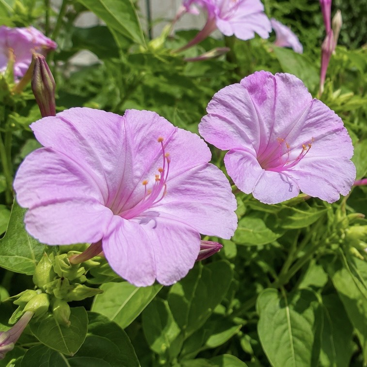
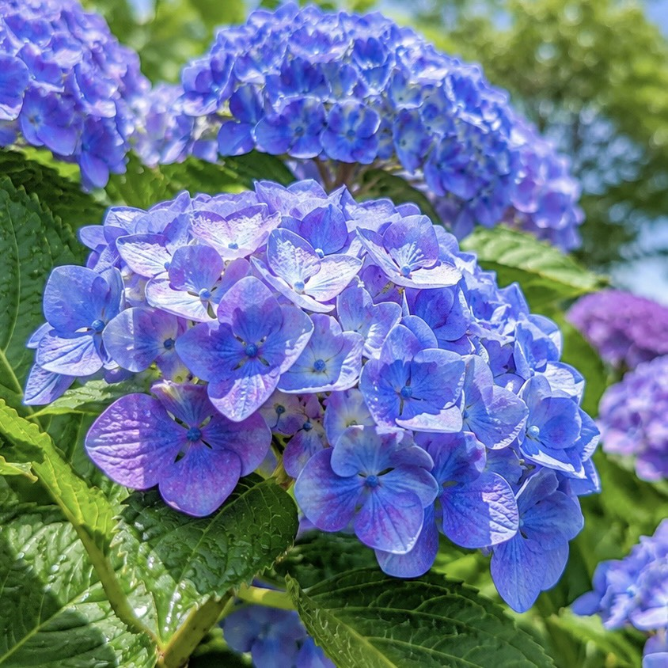
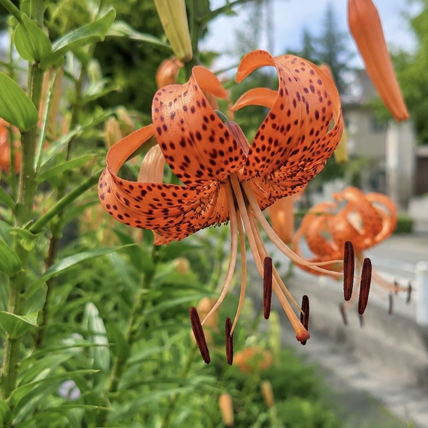

きょうのみちくさ

オシロイバナ
- 夕方になるとラッパ形の花を開き、甘い香りを漂わせます。
- ピンク、白、黄色など花色が豊富で、道ばたや住宅街でも身近に観察できます。
- 開花時期：6月～10月ごろ
- 原産地：熱帯アメリカ
- 草丈：50～100cmほど

アジサイ
- 梅雨の時期を彩る代表的な花です。
- 土の性質によって花の色が変化し、青や紫、ピンクなどさまざまな色を楽しむことができます。
- 開花時期：6月～7月ごろ
- 原産地：日本、東アジア
- 草丈：100～200cmほど

オニユリ
- 鮮やかなオレンジ色の花びらと黒い斑点が特徴です。
- 花びらが反り返る姿から夏を代表する花として親しまれています。
- 開花時期：7月～8月
- 原産地：中国、日本、朝鮮半島
- 草丈：1～2mほど